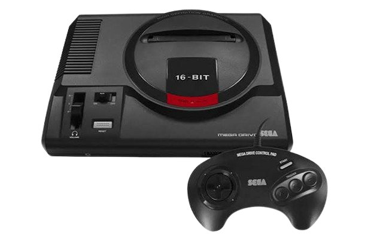
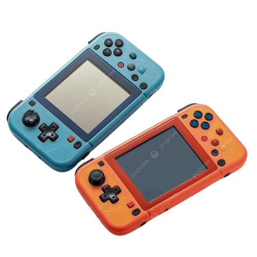

Selecione o Protocolo de Inicialização

Arcades
A era de ouro dos fliperamas.

Consoles de Mesa
O entretenimento invade as salas.

Portáteis
O poder dos jogos na palma da mão.
Protocolo: Arcades Autorizado
Os arcades são máquinas dedicadas grandes e caras que rodam apenas um jogo. São conhecidos no Brasil também como fliperamas. Com as tecnologias atuais pessoas comuns podem construir seus próprios arcades, a maioria sendo multi-jogos.
- 1ª Geração (1966 a 1970) – máquinas eletromecânicas que utilizavam modelos analógicos de exibição de imagens interativas, destacando empresas como a SEGA e Taito.
- 2ª Geração (1971 a 1977) – criação dos primeiros arcades eletrônicos como Galaxy Game, Computer Space e Pong, que eclodiram o mercado de jogos eletrônicos mundialmente.
- 3ª Geração (1978 a 1983) – conhecida como era de ouro dos videogames com a aparição de empresas e jogos icônicos como Space Invaders, Pac-Man e Donkey Kong.
- 4ª Geração (1984 a 1990) – pós crash dos consoles de mesa, são introduzidas novas tecnologias e hardware para os arcades, gerando novos tipos de jogo como side-scrolling e jogos de luta complexos.
- 5ª Geração (1991 a 1999) – como forma de renascimento da cultura dos arcades frente aos consoles e computadores, os jogos de luta se tornam a nova forma de entretenimento neste segmento, sustentando o mercado por quase uma década.
- 6ª Geração (2000 até hoje) – declínio dos arcades, que desenvolveram formas de controle em máquinas específicas para se diferenciar dos consoles, criando nichos de mercado e sobrevivendo em casas de diversão para crianças; pessoas comuns podem construir seu próprio arcade em virtude das tecnologias de baixo custo como Arduino e telas de LED.
Protocolo: Consoles Autorizado
Os consoles de mesa são também chamados de consoles de video game. Compreendem os aparelhos que processam jogos a partir de diversas mídias programadas com jogos. Necessitam de um dispositivo de tela para se conectarem. Você pode conhecer o acervo de consoles de mesa do Museu Bojogá clicando aqui.
- 1ª Geração (1972 a 1976) – Com a criação do Magnavox Odyssey e de Pong e seus clones, iniciou-se uma corrida pelos consoles de mesa, a partir do jogo de paredão e suas variações.
- 2ª Geração (1977 a 1983) – Início da era dos cartuchos de videogame, consolidando empresas e o mercado; compartilha o período dos arcades como a era de ouro dos videogames. Época do Atari 2600, Odyssey², Colecovision, Intellivision.
- 3ª Geração (1984 a 1986) – Após o crash dos videogames de 1983, empresas japonesas apresentam os videogames de 8 bits, buscando retomar um mercado destruído e dominado pelos arcades; momento de afirmação de empresas como Nintendo com o NES e Sega com o Master System.
- 4ª Geração (1987 a 1992) – Com o advento dos consoles de 16 bits, essa geração foi conhecida como a guerra dos consoles (Super Nintendo e Mega Drive), já dominando o mercado de jogos eletrônicos no mundo, com suas franquias e ações de marketing agressivos.
- 5ª Geração (1993 a 1997) – Rompe-se a era dos consoles de 32 e 64 bits, desconstruindo uma evolução de gerações por arquitetura de processador, mas por manutenção de franquias (Nintendo 64 e Sega Saturn) e entradas de novos fabricantes, como a Sony e seu Playstation e a mídia de CD.
- 6ª Geração (1998 a 2004) – Os consoles de mesa abandonam os cartuchos, adotando o DVD como padrão; volta-se o foco nos jogos online e nas convergências tecnológicas. Os consoles (Playstation 2 e Gamecube) passam a dedicar seu processamento a jogos com performance comparável aos computadores pessoais; marca o retorno dos Estados Unidos ao mercado de jogos com a empresa Microsoft e seu Xbox.
- 7ª Geração (2005 a 2011) – Na tentativa de garantir exclusividade contra concorrentes de diversas plataformas, os consoles de mesa se tornam máquinas de performance de 128-bits e total conectividade com serviços de internet; novas formas de interação com os usuários são as apostas para gerar uma experiência única para dedicados jogadores. Destaque para o Xbox 360, Playstation 3 e Nintendo Wii.
- 8ª Geração (2012 até 2019) – O auge de tudo o que um console de mesa pôde oferecer ao longo de sua existência: grandes franquias, a maior capacidade de armazenamento (blu-ray), conectividade total, exclusividade, experiências com novas formas de interação e potência em processamento.
- 9ª Geração (2020 até hoje) – Vivemos uma transformação onde os consoles dedicados se misturam com a computação em nuvem e novas experiências sensoriais promovidas pelas redes conectadas e o metaverso. O Playstation 5 e o Xbox Series X/S ainda se colocam como novidade.
Protocolo: Portáteis Autorizado
Os consoles portáteis são máquinas multi-jogo dedicadas baratas, isto é, um sonho para qualquer jogador: ter um console que tenha a possibilidade de troca de jogos, sem a necessidade de uma TV e que não seja do tamanho de um arcade. Você pode conhecer o acervo de consoles portáteis do Museu Bojogá clicando aqui.
- 1ª Geração (1979 a 1988) – os primeiros consoles portáteis multijogo foram experiências diversas que procuravam entreter jogadores.
- 2ª Geração (1989 a 1997) – o lançamento do Game Boy pela Nintendo inaugura a era de 8 bits nos portáteis e definindo o mercado como um dos mais bem sucedidos consoles vendidos no mundo; em pouco tempo os concorrentes lançavam novos produtos para morder a nova e lucrativa fatia de mercado.
- 3ª Geração (1998 a 2003) – a era dos consoles portáteis de 16 bits chega com o Neo Geo Pocket e o Game Boy Advance; diversas empresas criam novos tipos de consoles portáteis, principalmente na Ásia.
- 4ª Geração (2004 a 2010) – é lançado o Nintendo DS, dando novos rumos ao entretenimento de jogos portáteis, com duas telas de jogo sendo uma sensível ao toque; a Sony lança o PSP e se mostra concorrente forte para derrubar a hegemonia da Nintendo.
- 5ª Geração (2011 a 2015) – como forma de redesenhar a forma de jogar, é lançado o Nintendo 3DS, mas sem muito resultado; a Sony atualiza sua linha de portáteis com o PS Vita; novos projetos de portáteis com sistemas embarcados com Android são lançados, entre eles o Nvidia Shield Portable.
- 6ª Geração (2016 até hoje) – nomes como fusão de tecnologias, globalização e conectividade fizeram os consoles portáteis se aproximarem de seus irmãos maiores; é lançado o Nintendo Switch, um console híbrido que tanto pode ser jogado como portátil como na TV.